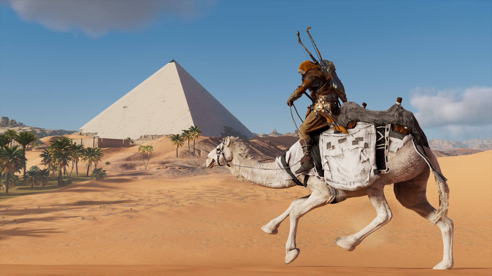
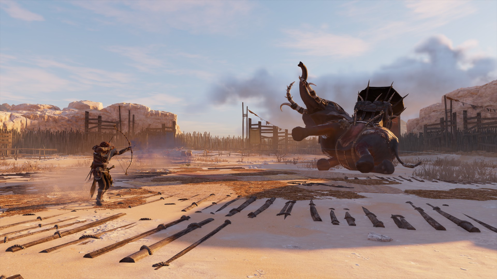
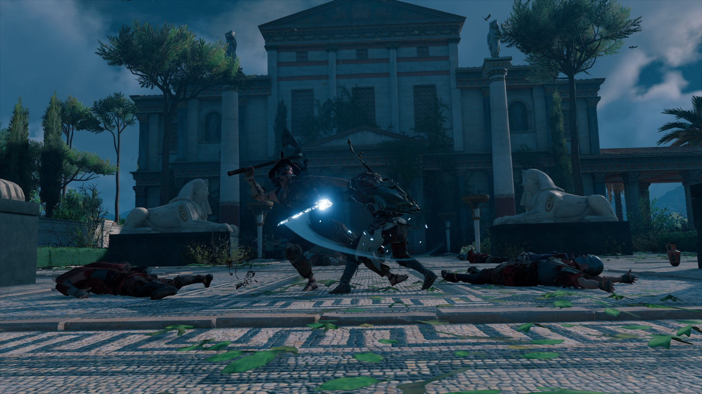
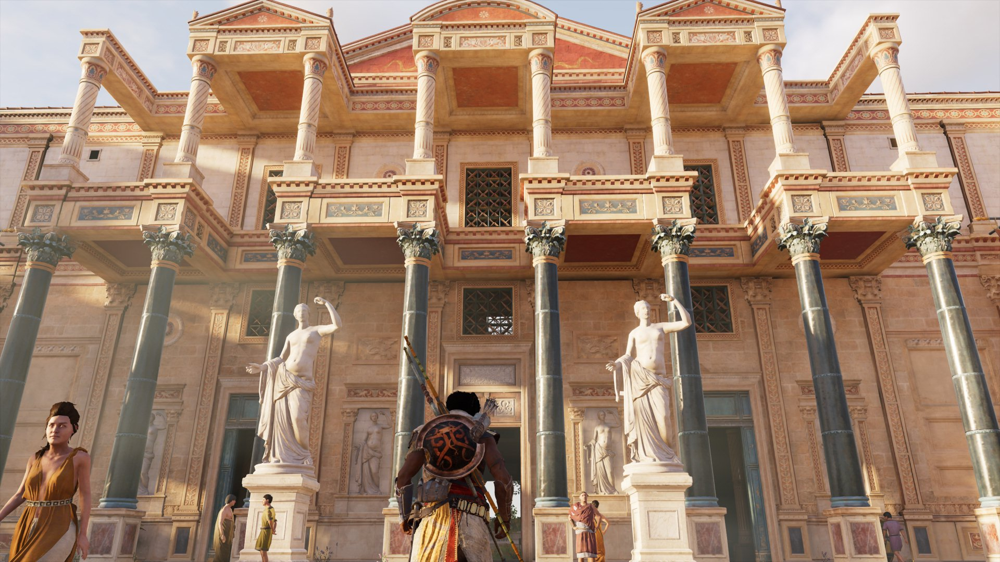

Đánh giá chung
10 commentVới một con mọt sử như tui thì những tựa game cho tui quay về quá khứ chứng kiến những điều đã diễn ra tận mắt (theo một nghĩa nào đó) vẫn luôn là một sự thích thú cùng cực. Đã vậy nếu mình tham gia vào việc định hình cả thế giới từ thời cổ thì còn ngầu hơn. Assassin’s Creed vẫn luôn là lựa chọn tốt nhất vì lối tiếp cận câu chuyện dã sử như vậy, nhưng càng lúc thì chúng càng gây thất vọng trong một thời gian khá dài.
Assassin’s Creed Origins (ACO) khi ra mắt vào năm 2017 đã được xem là một pha hồi sinh ngoạn mục vào thời điểm AC bị cho là đã vào lối mòn, đặc biệt là sau hai thất bại của Unity và Syndicate. Làm lại một bối cảnh tiền truyện, thay đổi cơ chế gameplay có lẽ là điều vô cùng cần thiết với AC vào lúc đó, vì mọi thứ về AC đã dần đi vào lối mòn. Và ACO đã thành công , nhưng có thật sự làm tốt hay không thì vẫn cần phải xem xét lại.
Cốt truyện đa dạng nhiều hướng
Về mặt thị giác thì có lẽ tui không cần phải nói quá nhiều về dòng AC làm gì, engine AnvilNext 2.0 vẫn thường cho ra những hình ảnh đẹp tuyệt vời và lột tả được cả thế giới mà họ muốn. ACO không là ngoại lệ. Điều mà tui muốn nói nhất chính là cách Ai Cập cổ đại – nói đúng hơn là Ai Cập thời New Kingdom đã được tái hiện rất tuyệt vời. Những kim tự tháp hùng vĩ, những văn tự tượng hình cổ, những sa mạc trải rộng mênh mông. Các con đập bên bờ sông Nile, thành phố Alexandria cổ kính với đại thư viện và Sarapeum đã được trau chuốt đến từng ti từng tí. Dù đôi khi chúng dính một vài lỗi nhẹ như tượng của các vị thần Ai Cập không chính xác, nhưng đó chẳng thật sự là vấn đề lớn. Quan trọng là chúng đã làm quá tốt và tạo được một bối cảnh cực kỳ xác thực (đến chừng có thể) với con mọt sử như tui, và đặc biệt là không dính vào những lỗi lầm mà Hollywood đã dính 823984275 lần khi làm về Ai Cập (đang nói mày đó, Cleopatra, Rome và Gods of Egypt).
Tại sao lần này ở Ai Cập lại gây ấn tượng mạnh đến vậy? Vì gần như tất cả những gì chúng ta biết về văn hóa cũng như kiến trúc Ai Cập – Ai Cập chính tông ấy chứ không phải Alexandria của người Hy Lạp, đa phần chúng chỉ còn là những tàn tích, và sự nghiên cứu về những gì diễn ra thật sự cũng khá khó khăn do ghi chép toàn là chữ tượng hình và hình ảnh theo kiểu góc nghiêng. Hoan hô những nhà nghiên cứu đã tham gia vào ACO.
Bối cảnh lịch sử của ACO cũng là một thời gian cực kỳ thú vị trong lịch sử. Cụ thể là về thời gian Cleopatra muốn lật đổ người anh em và cũng là… chồng của mình là Plotemy XIII, sau đó có liên quan đến cả nhà độc tài lừng danh Julius Caesar (chữ “độc tài” trong thời Cộng hòa La Mã không thật sự giống mọi người nghĩ đâu). Nhưng nếu phải nói một cách công bằng, ACO đã phần nào đó lãng phí cả một câu chuyện vô cùng… đầy chất drama của một bộ phim hay về lịch sử, lẫn cả đã hơi miêu tả sai về một số nhân vật lịch sử. Khi nó làm tốt, nó cực kỳ tuyệt vời, nhưng lại có lúc lại hụt hơi một cách không đáng có chút nào. Tui sẽ bàn kỹ hơn khi nói về tiết tấu của game.
May mắn thay, Cleopatra đã được thể hiện rất tốt, là một phụ nữ thông minh, cáo già, tham vọng và có sức hút chứ không phải là một… người phụ nữ da trắng ra sức quyến rũ kẻ khác (Again, nói mày đó Cleopatra 1963, mặc cho tui rất tôn trọng Elizabeth Taylor).
Liệu game thủ có thích Assassin Creed?
Về mặt quản lý nhân vật và cả cơ chế chiến đấu thì đúng là game đã có thiên hướng chuyển sang RPG nhiều hơn. Thật ra từ Unity là đã bắt đầu có những yếu tố này – như quần áo và vũ khí khác nhau thì stat cũng thay đổi, nhưng nó chưa rõ ràng bằng ACO. Cụ thể hơn là: Không còn việc ám sát bằng hidden blade gọn gàng – vì nếu Hidden blade không được nâng cấp thì nó cũng không thể gây đủ sát thương để giết những kẻ có level cao hơn. Vũ khí cũng có yếu tố lv và stat mỗi cây khác nhau chứ không còn chỉ là damage cao khi unlock loại mới.
Quần áo thì trừ những vật dụng như bao tay, hidden blade, mọi thứ về cơ bản chỉ là thay skin thôi chứ không áp dụng hoàn toàn về stat. Cái này ở Odyssey mới thay đổi triệt để. Cơ mà tui là kẻ khoái thời trang và việc này không khiến cho áo đi một đằng, quần đi một nẻo và giày thì quá xa nên để cho Bayek thay đồ tùy vào cutscene lại là một thú vui.
Cơ chế chiến đấu cũng khác biệt khi không còn cái màn đỡ đòn/counter 1 hit chết luôn. Cũng chẳng có flow tưng bừng như AC3, ACIV, Rouge và Syndicate (gosh I miss it). Mọi thứ có phần cục súc hơn và mang tính chiến thuật cao hơn so với những game cũ, vì mỗi loại vũ khí sẽ có cách tấn công khác nhau, cả “chiêu cuối” cũng khác luôn. Và thật lòng mà nói thì cơ chế mới này vẫn chưa hoàn thiện, nếu không muốn nói là hơi tù – đặc biệt sau khi đã chơi Odyssey mà quay lại Origins. Phải nói tuy có hạn chế nhưng đây vẫn là những thay đổi đáng khen, làm tiền đề tốt cho việc biến hoàn toàn thành game RPG ở Odyssey và cả Valhalla sắp ra mắt nữa.
Đồ họa đẹp nhưng vẫn có điểm yếu
Đây có lẽ chính là lí do khiến cho ACO dễ bị nhàm chán. Nếu tính về mặt câu chuyện thì game có một sự khởi đầu gần như vào vấn đề ngay tắp lự: Bayek giết một trong những tay chủ tế, anh ta có quá khứ tồi tệ để có lí do giết chúng. Như thể thời tới cản không nổi, anh ta được phong tước trở thành Medjay of Egypt – người bảo hộ toàn Ai Cập và được giao nhiệm vụ quét sạch lũ tư tế thuộc The Order of Ancients để ngầm giúp Celopatra… Mọi thứ đang hấp dẫn như thế bỗng dưng bị khựng lại vì chúng ta sẽ phải đi giết khá nhiều lũ tư tế tại các vùng khác nhau trong gần… 2/3 game mà không thật sự có nhiều tiếp nối về câu chuyện chung tình hình ở Ai Cập.
Có lẽ bạn sẽ nói, “Ủa, bình thường với game AC mà? Cũng đi đây đi đó giết Templar thôi”. Bạn không sai, nhưng ý tui là cách kích hoạt nhiệm vụ kìa. Ở đa phần các AC thật sự hay thì cách tiếp diễn câu chuyện để “sẵn tiện” giết luôn mục tiêu được vạch ra sẵn được xây dựng tốt hơn. Còn ở ACO dễ làm ta cảm thấy việc đi giết từng thầy tế có phần quá tách biệt với câu chuyện chính.
Về cơ bản, thời gian này giống hệt như cả game AC đầu tiên: bây giờ giao cho cậu cứ đến A giết kẻ này, rồi đến B giết kẻ kia,… rồi sau đó gần cuối game mới bắt đầu thấy cốt truyện có tiến triển mạnh. Nhưng ACO thì dĩ nhiên là phiên bản tốt hơn. Có lẽ chỉ ở Memphis mới là có ảnh hưởng cốt truyện đáng kể nhất và đẩy thêm ham muốn chơi tiếp để biết điều gì sẽ diễn ra. Tui cũng thừa nhận ở đoạn này tui từng drop ACO một thời gian cho đến gần đây mới hoàn thành.
Thiếu cân đối trong các tuyến nhiệm vụ phụ
Vẫn biết đây là một câu chuyện trả thù của riêng Bayek để rồi trở thành sự khởi đầu của hội sát thủ, thì mọi thứ nên tập trung vào góc nhìn của Bayek và Aya là chính… Nhưng cứ lướt lướt thế này, lúc nhanh lúc chậm không hợp lý thật sự dễ phá hỏng cảm nhận câu chuyện game của người chơi. Nếu đoạn đi giết các thầy tế được rút ngắn lại và dành thời gian xây dựng cao trào ở đoạn sau có lẽ nhịp độ game sẽ chắc hơn. Không phải cứ kéo dài và thời gian chơi nhiều là game sẽ hay.
Nói đơn giản là thế này, nếu bạn không làm nhiệm vụ phụ bạn sẽ khó mà đạt đủ level để thực hiện các nhiệm vụ chính. Và chúng chỉ có một công thức lặp đi lặp lại rất… Ubisoft. Và có lẽ trong hàng trăm cái nhiệm vụ này thì chỉ có khoảng chục nhiệm vụ là có độ dài hơi và xây dựng được một chút để tạo bối cảnh, cũng như để thấy sự ảnh hưởng của Bayek ở Ai Cập.
Và ngày trước thì vốn dĩ những nhiệm vụ phụ thế này góp phần không ít trong việc xây dựng các tuyến nhân vật phụ (có thật ngoài đời) trong game. Nhưng lần này chả có một nhân vật phụ nào thật sự nổi bật cả, kể cả khi họ tham gia các tuyến nhiệm vụ dài hơi. Bây giờ kể lại, tui chỉ nhớ ở Cyrene thì Bayek giúp một vài người quan trọng và sau đó thì kéo họ lại để thành lập Hidden Ones phiên bản Cyrene thôi chứ cũng chả nhớ được gì khác.
Tổng Kết
Tựu trung, ACO tuy còn vài hạn chế cả về việc thay đổi mới chưa hoàn chỉnh lẫn những đặc trưng cũ không có gì thay đổi, nhưng đây vẫn thật sự là một tựa game AC hay và đáng chơi. Nhân vật Bayek phát triển tuyệt vời, bối cảnh thú vị và một câu chuyện tạm ổn là đủ để cho bất cứ ai từng là fan dòng AC có thể quay lại. ACO cũng là cơ sở để ta cũng nên đặt một chút niềm tin là Ubisoft hoàn toàn có thể làm một game hay, nếu cho các studio của họ đủ thời gian phát triển chứ không làm theo kiểu mỗi năm một game nữa.

topgamer June 21, 2024
Chơi tạm được giải trí thôi, mình thì mình chờ game Wukong
Replysuperstar_9xSeptember 11, 2023
Cái này cũng tạm được.
Reply